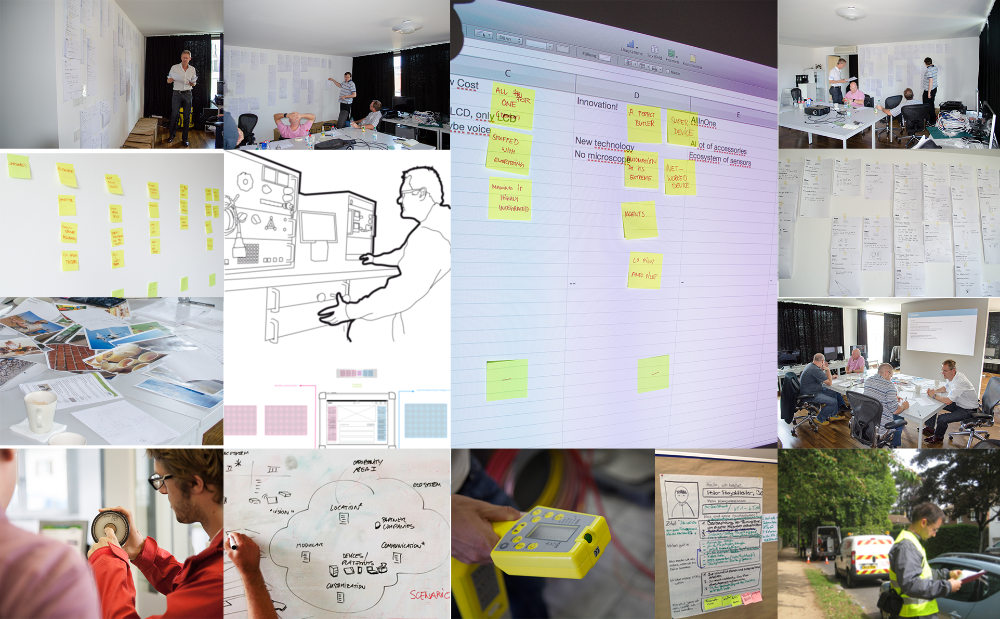
User Research
Facilitate first workshops with clients and their end-users. Prepare, conduct and evaluate qualitative user research. Visualize and organize findings to communicate demands to product stakeholders.
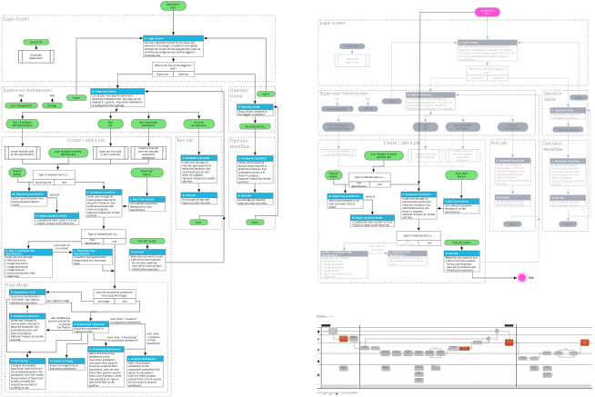
Requirement Analysis
Crafting first User Stories, create User Story Mappings and Prototypes to validate Requirements with stakeholders and end-users. Helping Product Owners to visualize and communicate underlying design principles to relevant stakeholders across departments. Prototyping to get quick feedback in the early stages of the design concept phase via webtechnologies, paper or dedicated prototyping tools.
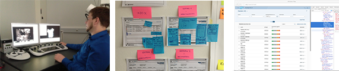
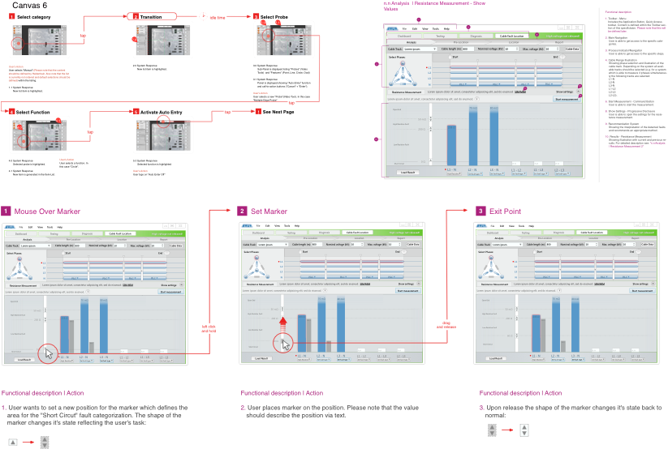
UI Design
Crafting and documenting design concepts from user flows to atomized control behaviour in order to prepare development and support dev teams in sprints.

Qualitative User Research, Information Architecture, Use Case Definition, UI Specification, QML Prototyping
Baur
Helped planning and conducting stakeholder interviews, user research, concept and design of in-car devices for the austrian based testing and mesaurement technology provider BAUR. Led the interaction design specification for the new BAUR Cable Test Van Triton and created QML prototypes for mobile measurement units.
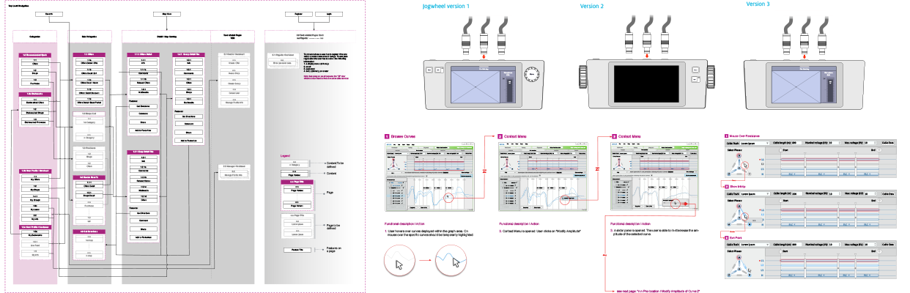
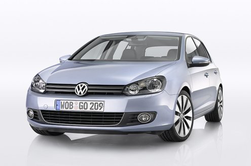
Qualitative User Research
Volkswagen Group Research
Planned and led user research for new VW services via end-user interviews. Helped VW to gather qualitative insights and helped with the planning of quantitative user surveys used to inform VW about new opportunity areas.
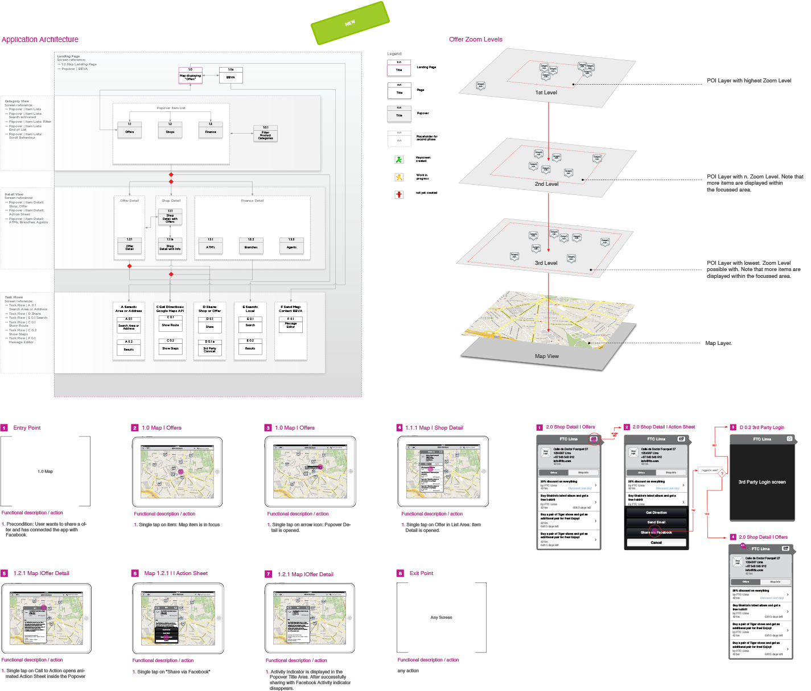
Information architecture, Use Case definition, UI specification for iOS and web services
BBVA
Worked in Madrid for spanish bank BBVA on several applications for two iOS platforms. Tasks were to conceptualize the interaction paradigms, underlying hierarchy and to create detailed specifications.


Information Architecture, Use Case Definition, UI concept and specification for iOS and Android devices
Bosch - Smart Home
Worked for the german multinational engeneering and electronics company Bosch on various projects. Helped to conceptualize smartphone and tablet apps for their new smart home system.
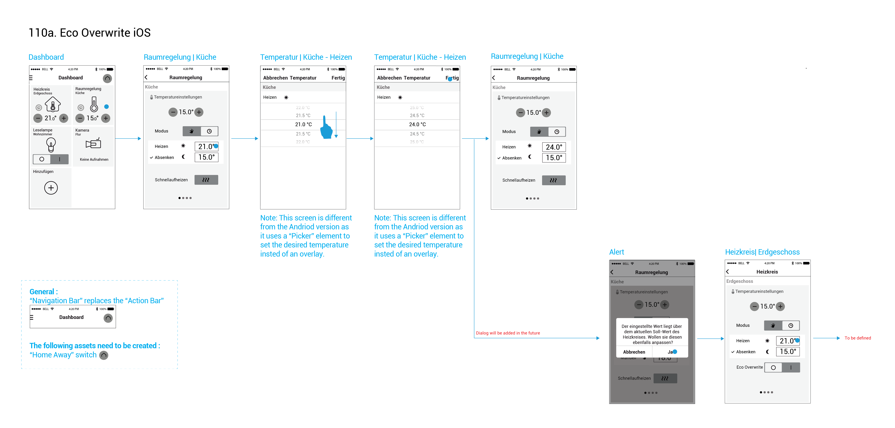
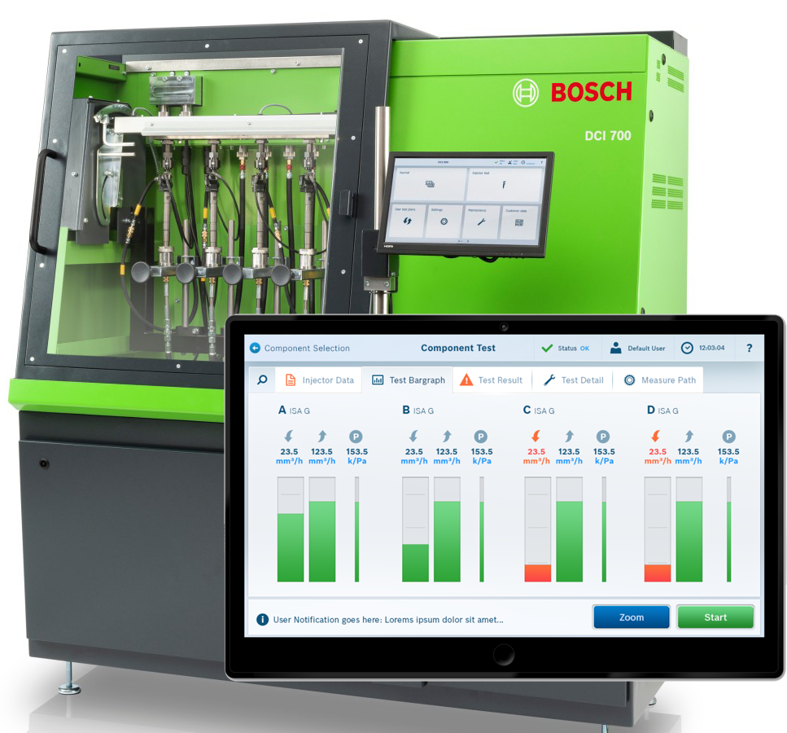
Information Architecture, UI concept, OML prototyping
Bosch - Test Bench for Common Rail Injectors
Design Concept and QML based prototype for Bosch's automotive aftermarket division. After validating the design concept with the Products Owners the protoype was used to conduct end user tests with selected Bosch clients.
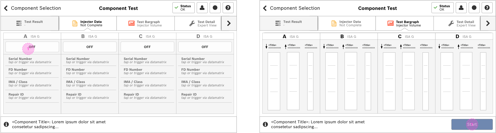
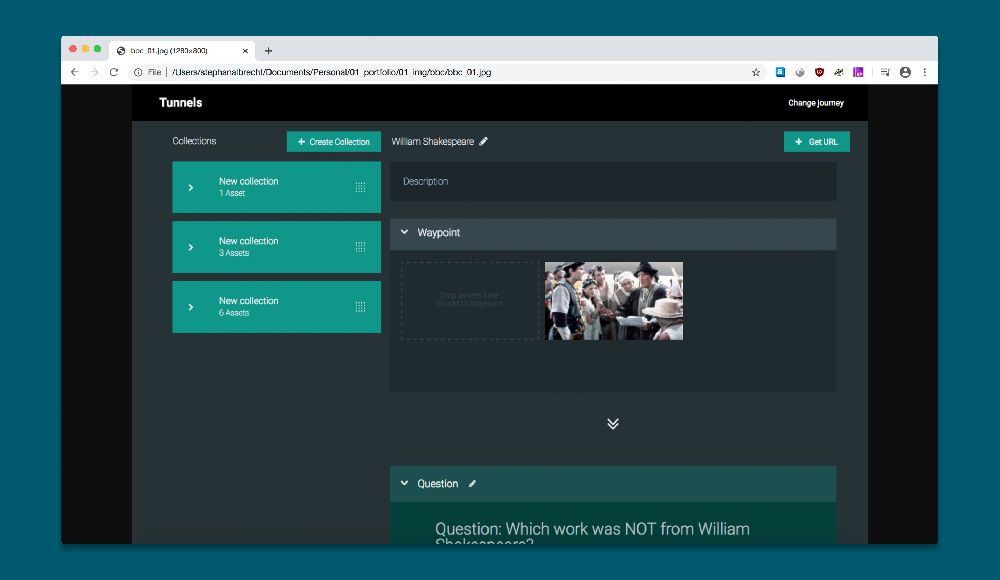
Information architecture, Use Case definition
BBC
Concept for a prototype on behalf of BBC's Research and Eductation Space (RES). The aim was to develop a concept and prototype to improve access and use of BBC's archive as an online educational resource for teaching, learning and research.